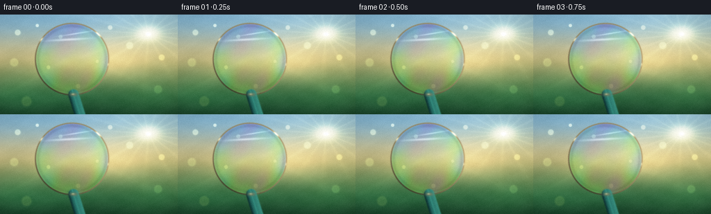

CODING AGENTS AS PIXEL WORLD MODELS
traex/DeepSeek-V4.1-Flash · phygen_083
点击播放 · 原生 RGB 像素
逐轮保存的候选
回放视频、检查图与代码变化。
每份候选均可单独播放。实际图片检查记录在下方工具轨迹中。
候选 01播放与检查图
点击播放 · 原生 RGB 像素

展开代码变化
--- 上一保存版本 +++ 本次保存版本 @@ -0,0 +1,311 @@ +from __future__ import annotations + +from pathlib import Path + +import cv2 +import numpy as np + +import artifact_io + + +CASE_DIR = Path(__file__).resolve().parent +WIDTH = 256 +HEIGHT = 144 +FRAMES = 20 +FPS = 4.0 +SS = 4 + + +def smoothstep(edge0, edge1, x): + t = np.clip((x - edge0) / (edge1 - edge0), 0.0, 1.0) + return t * t * (3.0 - 2.0 * t) + + +def gaussian(x, y, cx, cy, sx, sy, angle=0.0): + ca = np.cos(angle) + sa = np.sin(angle) + xr = (x - cx) * ca + (y - cy) * sa + yr = -(x - cx) * sa + (y - cy) * ca + return np.exp(-0.5 * ((xr / sx) ** 2 + (yr / sy) ** 2)) + + +def mix(a, b, t): + t = np.asarray(t)[..., None] if np.ndim(t) == 2 else t + return a * (1.0 - t) + b * t + + +def soft_ellipse_mask(x, y, cx, cy, rx, ry, softness): + d = np.sqrt(((x - cx) / rx) ** 2 + ((y - cy) / ry) ** 2) + return 1.0 - smoothstep(1.0 - softness, 1.0 + softness, d) + + +def build_background(width, height): + yy, xx = np.mgrid[0:height, 0:width].astype(np.float32) + x = xx / width + y = yy / height + + top = np.array([0.48, 0.67, 0.78], np.float32) + warm = np.array([0.99, 0.84, 0.57], np.float32) + green = np.array([0.19, 0.36, 0.22], np.float32) + deep = np.array([0.055, 0.15, 0.10], np.float32) + + upper = smoothstep(0.02, 0.52, y)[..., None] + lower = smoothstep(0.42, 0.86, y)[..., None] + floor = smoothstep(0.76, 1.05, y)[..., None] + bg = top * (1.0 - upper) + warm * upper + bg = bg * (1.0 - lower) + green * lower + bg = bg * (1.0 - floor) + deep * floor + + # Hazy tree masses give the sunlight a believable outdoor setting. + foliage = np.zeros_like(bg) + foliage_alpha = np.zeros((height, width), np.float32) + clusters = [ + (0.04, 0.64, 0.20, 0.24, 0.30, [0.08, 0.24, 0.13]), + (0.20, 0.78, 0.27, 0.19, -0.22, [0.06, 0.20, 0.11]), + (0.94, 0.65, 0.20, 0.30, 0.08, [0.10, 0.27, 0.13]), + (0.72, 0.83, 0.34, 0.18, -0.10, [0.055, 0.18, 0.10]), + (0.49, 0.93, 0.48, 0.16, 0.00, [0.035, 0.12, 0.07]), + ] + for cx, cy, sx, sy, ang, color in clusters: + a = gaussian(x, y, cx, cy, sx, sy, ang) * 0.60 + foliage_alpha = np.maximum(foliage_alpha, a) + foliage += np.asarray(color, np.float32) * a[..., None] + foliage /= np.maximum(foliage_alpha[..., None], 1e-6) + bg = mix(bg, foliage, foliage_alpha * 0.72) + + # A low sun, soft clouds, and a broad atmospheric flare. + sx, sy = 0.835, 0.195 + sun_core = gaussian(x, y, sx, sy, 0.008, 0.010) + sun_halo = gaussian(x, y, sx, sy, 0.043, 0.050) + sun_wide = gaussian(x, y, sx, sy, 0.24, 0.30) + ray_angle = np.arctan2(y - sy, x - sx) + ray_r = np.sqrt((x - sx) ** 2 + (y - sy) ** 2) + rays = (0.5 + 0.5 * np.cos(ray_angle * 19.0 + 0.8)) ** 5 + rays *= np.exp(-ray_r / 0.35) * 0.055 + sun_light = sun_core * 1.45 + sun_halo * 0.44 + sun_wide * 0.16 + rays + bg += sun_light[..., None] * np.array([1.0, 0.82, 0.55], np.float32) + + # Distant glints and out-of-focus leaves. + bokeh_layer = np.zeros_like(bg) + bokeh_specs = [ + (0.10, 0.18, 0.018, [0.90, 0.83, 0.56], 0.22), + (0.21, 0.11, 0.010, [0.98, 0.90, 0.62], 0.30), + (0.34, 0.22, 0.013, [0.72, 0.83, 0.57], 0.18), + (0.62, 0.13, 0.014, [0.94, 0.78, 0.48], 0.20), + (0.73, 0.31, 0.022, [0.80, 0.86, 0.54], 0.15), + (0.91, 0.43, 0.018, [0.97, 0.82, 0.45], 0.18), + (0.08, 0.48, 0.026, [0.68, 0.79, 0.45], 0.13), + (0.27, 0.53, 0.012, [0.93, 0.79, 0.45], 0.16), + (0.55, 0.47, 0.010, [0.98, 0.91, 0.64], 0.12), + (0.89, 0.75, 0.025, [0.54, 0.70, 0.35], 0.13), + (0.15, 0.87, 0.031, [0.72, 0.67, 0.30], 0.11), + (0.44, 0.72, 0.014, [0.82, 0.74, 0.40], 0.12), + ] + for bx, by, br, color, alpha in bokeh_specs: + cx, cy = bx * width, by * height + radius = br * width + dist = np.sqrt((xx - cx) ** 2 + (yy - cy) ** 2) + disc = 1.0 - smoothstep(radius * 0.76, radius, dist) + rim = np.exp(-((dist - radius * 0.78) / (radius * 0.12)) ** 2) * 0.30 + soft = cv2.GaussianBlur((disc + rim).astype(np.float32), (0, 0), radius * 0.11) + bokeh_layer += soft[..., None] * np.asarray(color, np.float32) * alpha + bg += bokeh_layer + + # Fine atmospheric texture, deliberately low amplitude. + texture = ( + np.sin(x * 37.0 + np.sin(y * 19.0) * 2.0) + + 0.6 * np.sin(y * 51.0 - x * 13.0) + + 0.4 * np.cos((x + y) * 83.0) + ) * 0.006 + bg += texture[..., None] + + vignette = 1.0 - 0.18 * smoothstep(0.45, 0.90, np.sqrt((x - 0.48) ** 2 + (y - 0.48) ** 2)) + bg *= vignette[..., None] + return np.clip(bg, 0.0, 1.5).astype(np.float32) + + +def capsule_distance(x, y, p0, p1, width): + p0 = np.asarray(p0, np.float32) + p1 = np.asarray(p1, np.float32) + v = p1 - p0 + denom = float(v @ v) + qx = x - p0[0] + qy = y - p0[1] + t = np.clip((qx * v[0] + qy * v[1]) / denom, 0.0, 1.0) + dx = qx - t * v[0] + dy = qy - t * v[1] + dist = np.sqrt(dx * dx + dy * dy) + inv_len = 1.0 / np.sqrt(denom) + nx = -v[1] * inv_len + ny = v[0] * inv_len + signed = dx * nx + dy * ny + return dist, signed, t + + +def render_frame(background, frame_index): + h, w = HEIGHT * SS, WIDTH * SS + yy, xx = np.mgrid[0:h, 0:w].astype(np.float32) + x = xx / w + y = yy / h + time = frame_index / FPS + phase_t = 2.0 * np.pi * frame_index / FRAMES + + # A barely perceptible hand-held drift keeps the still scene alive. + cam_x = 0.0018 * np.sin(phase_t * 0.70 + 0.5) + cam_y = 0.0010 * np.sin(phase_t * 0.45 + 1.1) + map_x = (xx + cam_x * w).astype(np.float32) + map_y = (yy + cam_y * h).astype(np.float32) + scene = cv2.remap(background, map_x, map_y, cv2.INTER_CUBIC, borderMode=cv2.BORDER_REFLECT) + + # The film breathes gently, while its lower edge remains attached to the wand. + cx = 0.405 + 0.0018 * np.sin(phase_t * 0.55) + cy = 0.445 + 0.0013 * np.sin(phase_t * 0.48 + 0.9) + rx = 0.205 + 0.0013 * np.sin(phase_t * 0.61 + 0.2) + ry = 0.355 + 0.0016 * np.sin(phase_t * 0.52 + 1.6) + u = (x - cx) / rx + v = (y - cy) / ry + r = np.sqrt(u * u + v * v) + theta = np.arctan2(v, u) + + inside = 1.0 - smoothstep(0.982, 1.002, r) + edge = np.exp(-((r - 0.965) / 0.032) ** 2) + + # Refraction is strongest toward the rim and follows a slow liquid ripple. + ripple = ( + 0.45 * np.sin(7.5 * u + 3.4 * v + phase_t) + + 0.28 * np.sin(4.2 * v - 8.8 * u - 0.8 * phase_t) + + 0.20 * np.cos(12.0 * (u * u + 0.7 * v * v) - 1.3 * phase_t) + ) + radial = np.clip(r, 0.0, 1.0) + dx = w * (0.0048 * u * (0.30 + 0.55 * radial) + 0.0017 * ripple * u) + dy = h * (0.0044 * v * (0.30 + 0.55 * radial) + 0.0015 * ripple * v) + refr_x = np.clip(xx + dx, 0, w - 1).astype(np.float32) + refr_y = np.clip(yy + dy, 0, h - 1).astype(np.float32) + refracted = cv2.remap(scene, refr_x, refr_y, cv2.INTER_CUBIC, borderMode=cv2.BORDER_REFLECT) + + # Thin-film interference from a smoothly draining, swirling thickness field. + thickness = ( + 385.0 + + 52.0 * v + - 13.0 * u + + 23.0 * np.sin(2.9 * u + 1.2 * np.sin(2.2 * v + 0.7 * phase_t)) + + 15.0 * np.sin(5.2 * v - 1.8 * u - 0.85 * phase_t) + + 8.5 * np.cos(9.5 * u + 4.4 * v + 1.15 * phase_t) + + 6.0 * np.sin(4.0 * r - 1.7 * phase_t) + ) + wavelengths = np.array([645.0, 535.0, 455.0], np.float32) + phase = 4.0 * np.pi * 1.34 * thickness[..., None] / wavelengths + interference = 0.5 + 0.5 * np.cos(phase) + interference = 0.24 + 0.76 * interference + interference = np.clip(interference, 0.0, 1.0) + + # A bright backlit film transmits the garden while adding a colored sheen. + transmitted = refracted * 0.88 + 0.045 + sun_in_film = gaussian(x, y, 0.72, 0.30, 0.12, 0.18, -0.45) * 0.12 + transmitted += sun_in_film[..., None] * np.array([1.0, 0.88, 0.66], np.float32) + reflected = interference * np.array([0.88, 0.92, 0.97], np.float32) + fresnel = 0.20 + 0.33 * smoothstep(0.38, 1.0, radial) + film = transmitted * (1.0 - fresnel[..., None] * 0.54) + reflected * fresnel[..., None] * 0.58 + + # Curved sky reflection and a crisp glint on the sun-facing rim. + arc1 = gaussian(x, y, cx - 0.020, cy - ry * 0.55, 0.073, 0.0075, -0.10) + arc2 = gaussian(x, y, cx + 0.025, cy - ry * 0.72, 0.055, 0.0045, -0.28) + glint = np.clip(arc1 * 0.42 + arc2 * 0.38, 0.0, 1.0) + film += glint[..., None] * np.array([0.94, 0.97, 1.0], np.float32) * (0.55 + 0.45 * edge[..., None]) + + # A soft inner lip prevents the transparent disk from looking pasted on. + inner_shadow = np.exp(-((r - 0.93) / 0.045) ** 2) * 0.10 + film *= 1.0 - inner_shadow[..., None] + film = np.clip(film, 0.0, 1.25) + + comp = scene * (1.0 - inside[..., None]) + film * inside[..., None] + + # Soap solution pooling at the bottom of the loop. + pool = gaussian(x, y, cx, cy + ry * 0.965, rx * 0.44, ry * 0.055, 0.0) + pool = pool * inside + comp += pool[..., None] * np.array([0.08, 0.16, 0.16], np.float32) * 0.35 + + # The metal loop has a sunlit upper-right face and a warm lower-left face. + ring = np.exp(-((r - 1.004) / 0.019) ** 2) + ring = np.maximum(ring, np.exp(-((r - 0.995) / 0.007) ** 2) * 0.70) + light_dir = np.array([0.72, -0.69], np.float32) + normal = np.stack([u / np.maximum(r, 1e-5), v / np.maximum(r, 1e-5)], axis=-1) + facing = np.clip(normal @ light_dir, -1.0, 1.0) + tube_light = 0.46 + 0.30 * facing + 0.13 * np.sin(theta * 2.0 + 0.8) + ring_col = np.array([0.62, 0.55, 0.40], np.float32) * tube_light[..., None] + ring_col += np.array([0.20, 0.18, 0.12], np.float32) + rim_glints = ( + gaussian(x, y, cx + rx * 0.72, cy - ry * 0.70, 0.010, 0.016, -0.6) + + 0.55 * gaussian(x, y, cx - rx * 0.82, cy - ry * 0.55, 0.009, 0.013, 0.5) + + 0.35 * gaussian(x, y, cx + rx * 0.97, cy + ry * 0.15, 0.006, 0.010, 0.1) + ) + ring_col += np.clip(rim_glints, 0.0, 1.0)[..., None] * np.array([0.95, 0.92, 0.78], np.float32) + comp = comp * (1.0 - ring[..., None] * 0.95) + ring_col * (ring[..., None] * 0.95) + + # Glossy plastic wand handle, running out of frame from the bottom of the loop. + p0 = np.array([(cx + 0.04 * rx) * w, (cy + 0.995 * ry) * h], np.float32) + p1 = np.array([(cx + 0.25 * rx) * w, h * 1.04], np.float32) + handle_dist, handle_signed, handle_t = capsule_distance(xx, yy, p0, p1, 0.035 * w) + handle_width = 0.030 * w + aa = 1.4 * SS + handle_mask = 1.0 - smoothstep(handle_width - aa, handle_width + aa, handle_dist) + side = np.clip(handle_signed / handle_width, -1.0, 1.0) + handle_base = np.array([0.055, 0.27, 0.27], np.float32) + handle_hi = np.array([0.30, 0.73, 0.63], np.float32) + handle_shadow = np.array([0.018, 0.10, 0.11], np.float32) + handle_light = np.clip(0.60 - 0.43 * side, 0.0, 1.0) + handle_col = mix(handle_base, handle_hi, handle_light * 0.60) + handle_col = mix(handle_col, handle_shadow, smoothstep(0.35, 1.0, side) * 0.72) + center_line = np.exp(-(handle_signed / (handle_width * 0.18)) ** 2) * 0.20 + handle_col += center_line[..., None] * np.array([0.17, 0.42, 0.36], np.float32) + top_cap = gaussian(x, y, p0[0] / w, p0[1] / h, 0.019, 0.024, 0.0) + handle_mask = np.maximum(handle_mask, top_cap * 0.92) + comp = comp * (1.0 - handle_mask[..., None] * 0.94) + handle_col * (handle_mask[..., None] * 0.94) + + # The connector sits over both the loop and the handle. + connector = gaussian(x, y, p0[0] / w, p0[1] / h, 0.015, 0.012, 0.0) + connector_col = np.broadcast_to( + np.array([0.48, 0.46, 0.34], np.float32), (h, w, 3) + ).copy() + connector_glint = gaussian(x, y, p0[0] / w - 0.004, p0[1] / h - 0.004, 0.006, 0.005) + connector_col += connector_glint[..., None] * np.array([0.35, 0.31, 0.22], np.float32) + comp = comp * (1.0 - connector[..., None] * 0.80) + connector_col * (connector[..., None] * 0.80) + + # Bloom sells the backlighting without softening the whole image. + bright = np.clip(comp - 0.80, 0.0, None) + bloom_small = cv2.GaussianBlur(bright, (0, 0), 2.0 * SS) + bloom_large = cv2.GaussianBlur(bright, (0, 0), 8.0 * SS) + comp += bloom_small * 0.20 + bloom_large * 0.10 + + # Gentle highlight rolloff and a tiny amount of film grain. + comp = np.where(comp <= 0.80, comp, 0.80 + 0.20 * (1.0 - np.exp(-(comp - 0.80) / 0.20))) + comp = np.clip(comp, 0.0, 1.0) + comp = comp ** (1.0 / 1.06) + + small = cv2.resize(comp, (WIDTH, HEIGHT), interpolation=cv2.INTER_AREA) + rng = np.random.default_rng(1000 + frame_index) + grain = rng.normal(0.0, 0.0075, (HEIGHT, WIDTH, 1)).astype(np.float32) + small = np.clip(small + grain, 0.0, 1.0) + return (small * 255.0 + 0.5).astype(np.uint8) + + +def generate(): + background = build_background(WIDTH * SS, HEIGHT * SS) + frames = np.stack([render_frame(background, i) for i in range(FRAMES)], axis=0) + artifact_io.save(frames, CASE_DIR) + + # An MP4 is convenient for human review; pixels.npz remains the canonical output. + writer = cv2.VideoWriter( + str(CASE_DIR / "preview.mp4"), + cv2.VideoWriter_fourcc(*"mp4v"), + FPS, + (WIDTH, HEIGHT), + ) + for frame in frames: + writer.write(cv2.cvtColor(frame, cv2.COLOR_RGB2BGR)) + writer.release() + return frames + + +if __name__ == "__main__": + generate()
候选 02播放与检查图
候选 03播放与检查图
点击播放 · 原生 RGB 像素


展开代码变化
--- 上一保存版本
+++ 本次保存版本
@@ -44,10 +44,10 @@
x = xx / width
y = yy / height
- top = np.array([0.48, 0.67, 0.78], np.float32)
- warm = np.array([0.99, 0.84, 0.57], np.float32)
- green = np.array([0.19, 0.36, 0.22], np.float32)
- deep = np.array([0.055, 0.15, 0.10], np.float32)
+ top = np.array([0.43, 0.65, 0.84], np.float32)
+ warm = np.array([0.99, 0.85, 0.62], np.float32)
+ green = np.array([0.18, 0.34, 0.20], np.float32)
+ deep = np.array([0.055, 0.14, 0.085], np.float32)
upper = smoothstep(0.02, 0.52, y)[..., None]
lower = smoothstep(0.42, 0.86, y)[..., None]
@@ -194,23 +194,28 @@
+ 6.0 * np.sin(4.0 * r - 1.7 * phase_t)
)
wavelengths = np.array([645.0, 535.0, 455.0], np.float32)
- phase = 4.0 * np.pi * 1.34 * thickness[..., None] / wavelengths
+ phase = 4.0 * np.pi * 1.37 * thickness[..., None] / wavelengths
interference = 0.5 + 0.5 * np.cos(phase)
- interference = 0.24 + 0.76 * interference
+ interference = 0.10 + 0.90 * interference
interference = np.clip(interference, 0.0, 1.0)
# A bright backlit film transmits the garden while adding a colored sheen.
- transmitted = refracted * 0.88 + 0.045
+ transmitted = refracted * 0.86 + 0.052
sun_in_film = gaussian(x, y, 0.72, 0.30, 0.12, 0.18, -0.45) * 0.12
transmitted += sun_in_film[..., None] * np.array([1.0, 0.88, 0.66], np.float32)
- reflected = interference * np.array([0.88, 0.92, 0.97], np.float32)
- fresnel = 0.20 + 0.33 * smoothstep(0.38, 1.0, radial)
- film = transmitted * (1.0 - fresnel[..., None] * 0.54) + reflected * fresnel[..., None] * 0.58
+ reflected = interference * np.array([0.97, 0.91, 0.95], np.float32)
+ fresnel = 0.30 + 0.34 * smoothstep(0.30, 1.0, radial)
+ film = transmitted * (1.0 - fresnel[..., None] * 0.57) + reflected * fresnel[..., None] * 0.69
+
+ # A pale blue sky reflection across the upper half clarifies the glassy surface.
+ sky_reflection = smoothstep(-0.90, -0.10, v) * (1.0 - smoothstep(0.28, 0.78, v))
+ sky_reflection *= (0.60 + 0.40 * np.cos(theta + 0.70)) * 0.085
+ film = mix(film, np.array([0.72, 0.88, 0.98], np.float32), sky_reflection)
# Curved sky reflection and a crisp glint on the sun-facing rim.
- arc1 = gaussian(x, y, cx - 0.020, cy - ry * 0.55, 0.073, 0.0075, -0.10)
- arc2 = gaussian(x, y, cx + 0.025, cy - ry * 0.72, 0.055, 0.0045, -0.28)
- glint = np.clip(arc1 * 0.42 + arc2 * 0.38, 0.0, 1.0)
+ arc1 = gaussian(x, y, cx - 0.020, cy - ry * 0.55, 0.073, 0.0055, -0.10)
+ arc2 = gaussian(x, y, cx + 0.025, cy - ry * 0.72, 0.055, 0.0038, -0.28)
+ glint = np.clip(arc1 * 0.55 + arc2 * 0.48, 0.0, 1.0)
film += glint[..., None] * np.array([0.94, 0.97, 1.0], np.float32) * (0.55 + 0.45 * edge[..., None])
# A soft inner lip prevents the transparent disk from looking pasted on.
@@ -232,8 +237,8 @@
normal = np.stack([u / np.maximum(r, 1e-5), v / np.maximum(r, 1e-5)], axis=-1)
facing = np.clip(normal @ light_dir, -1.0, 1.0)
tube_light = 0.46 + 0.30 * facing + 0.13 * np.sin(theta * 2.0 + 0.8)
- ring_col = np.array([0.62, 0.55, 0.40], np.float32) * tube_light[..., None]
- ring_col += np.array([0.20, 0.18, 0.12], np.float32)
+ ring_col = np.array([0.73, 0.62, 0.42], np.float32) * tube_light[..., None]
+ ring_col += np.array([0.24, 0.20, 0.12], np.float32)
rim_glints = (
gaussian(x, y, cx + rx * 0.72, cy - ry * 0.70, 0.010, 0.016, -0.6)
+ 0.55 * gaussian(x, y, cx - rx * 0.82, cy - ry * 0.55, 0.009, 0.013, 0.5)
候选 04播放与检查图
可观测工具轨迹
实际执行的命令与返回图片。
命令 1exit 0
/bin/bash -c "pwd && rg --files -g '"'!*__pycache__*'"' -g '"'!*.pyc'"' | sed -n '1,160p'"
命令 2exit 0
/bin/bash -c 'cat prompt.txt'
命令 3exit 0
/bin/bash -c 'cat GENERATION_RULES.md'
命令 4exit 0
/bin/bash -c 'cat task_spec.json'
命令 5exit 0
/bin/bash -c "sed -n '1,240p' artifact_io.py"
命令 6exit 0
/bin/bash -c "sed -n '1,240p' player_template.html"
命令 7exit 0
/bin/bash -c "python - <<'PY'
import importlib.util
for m in ['numpy','PIL','imageio','cv2','matplotlib']:
print(m, bool(importlib.util.find_spec(m)))
PY"命令 8exit 0
/bin/bash -c 'command -v chafa || command -v viu || command -v img2txt || true'
命令 9exit 0
/bin/bash -c "command -v ffmpeg || true; python - <<'PY'
import cv2
print('cv2', cv2.__version__)
PY"命令 10exit 1
/bin/bash -c 'python generate.py'
命令 11exit 1
/bin/bash -c 'python generate.py'
命令 12exit 0
/bin/bash -c 'python generate.py'
命令 13exit 0
/bin/bash -c "ls -lh generate.py pixels.npz inspection.png transition_check.png preview.mp4 frames/*.png | sed -n '1,40p'"
命令 14exit 0
/bin/bash -c "python - <<'PY'
from PIL import Image
import numpy as np
for f in ['frames/00.png','frames/10.png','frames/19.png']:
a=np.asarray(Image.open(f))
print(f, 'mean', a.mean((0,1)).round(1), 'std', a.std().round(1), 'range', a.min(), a.max())
# ASCII luminance map, 64x18
lum=np.asarray(Image.open(f).convert('L').resize((64,18)))
chars=' .:-=+*#%@'
for row in lum:
print(''.join(chars[min(len(chars)-1, int(v)*len(chars)//256)] for v in row))
print()
PY"命令 15exit 0
/bin/bash -c "python - <<'PY'
from PIL import Image
import numpy as np
frames=np.stack([np.asarray(Image.open(f'frames/{i:02d}.png')) for i in range(20)])
d=np.abs(np.diff(frames.astype(np.int16),axis=0))
print('frame diff mean range', d.mean((1,2,3)).min(), d.mean((1,2,3)).max())
print('frame diff max range', d.max((1,2,3)).min(), d.max((1,2,3)).max())
# changes in a center film crop
crop=frames[:,36:108,60:180]
d2=np.abs(np.diff(crop.astype(np.int16),axis=0))
print('film crop diff mean range', d2.mean((1,2,3)).min(), d2.mean((1,2,3)).max())
print('frame means first/last', frames[0].mean(), frames[-1].mean())
PY"命令 16exit 0
/bin/bash -c "python - <<'PY' import importlib.util for m in ['skimage','scipy']: print(m, bool(importlib.util.find_spec(m))) PY"
命令 17exit 0
/bin/bash -c "python - <<'PY'
from PIL import Image
import numpy as np
im=np.asarray(Image.open('frames/10.png').convert('RGB'))
# coarse 8x8 region color/luma table
for y in range(0,144,18):
row=[]
for x in range(0,256,32):
p=im[y:y+18,x:x+32].reshape(-1,3).mean(0).round().astype(int)
row.append('/'.join(map(str,p)))
print(' '.join(f'{s:>11}' for s in row))
PY"命令 18exit 0
/bin/bash -c "python - <<'PY'
from PIL import Image
import numpy as np
im=np.asarray(Image.open('frames/10.png')).astype(float)
def s(name,x0,x1,y0,y1):
a=im[y0:y1,x0:x1]; m=a.mean((0,1)); sat=(a.max(2)-a.min(2)).mean()
print(name, 'rgb', m.round(1), 'sat', round(sat,1), 'std',a.std().round(1))
s('film upper',75,135,25,55)
s('film center',65,145,45,90)
s('film left',58,82,55,85)
s('film lower',72,135,90,108)
s('outside sky',15,55,20,55)
s('outside foliage',10,50,85,110)
s('sun',205,235,20,40)
s('wand',113,129,112,143)
# circle boundary scan through horizontal y=64
for y in [20,40,64,90,105]:
print('y',y, [(x,im[y,x].astype(int).tolist()) for x in [50,55,60,100,150,160,165]])
PY"命令 19exit 0
/bin/bash -c 'python generate.py'
命令 20exit 0
/bin/bash -c "python - <<'PY'
from PIL import Image
import numpy as np
for i in [0,5,10,15,19]:
a=np.asarray(Image.open(f'frames/{i:02d}.png')).astype(float)
print(i, 'rgb mean', a.mean((0,1)).round(1), 'std', round(a.std(),1), 'sat', round((a.max(2)-a.min(2)).mean(),1))
print('files:')
import os
for f in ['pixels.npz','inspection.png','transition_check.png','preview.mp4']:
print(f, os.path.getsize(f))
PY"命令 21exit 0
/bin/bash -c "python - <<'PY'
from PIL import Image
import numpy as np
im=np.asarray(Image.open('frames/10.png').convert('RGB'))
lum=np.asarray(Image.open('frames/10.png').convert('L').resize((64,18)))
chars=' .:-=+*#%@'
for row in lum:
print(''.join(chars[min(9,int(v)*10//256)] for v in row))
PY"命令 22exit 0
/bin/bash -c "python - <<'PY'
from pathlib import Path
import json
import numpy as np
from PIL import Image
import artifact_io
case = Path('.')
spec = json.loads((case/'task_spec.json').read_text())
z = np.load(case/'pixels.npz')
pixels = z['pixels']
assert pixels.shape == (spec['height'], spec['width'], spec['frames']), pixels.shape
assert pixels.dtype == np.uint32
assert (case/'index.html').stat().st_size > 10000
assert (case/'preview.mp4').stat().st_size > 1000
frames=[]
for i in range(spec['frames']):
im=np.asarray(Image.open(case/f'frames/{i:02d}.png'))
assert im.shape == (spec['height'],spec['width'],3) and im.dtype == np.uint8
frames.append(im)
frames=np.stack(frames)
diff=np.abs(np.diff(frames.astype(np.int16),axis=0))
print('shape', frames.shape, 'dtype', frames.dtype)
print('frame mean diff', round(float(diff.mean()),3), 'max channel delta', int(diff.max()))
print('pixels sha256', __import__('hashlib').sha256((case/'pixels.npz').read_bytes()).hexdigest()[:16])
print('contract: OK')
PY"保存候选 4 份；完成命令 22 次；可验证图片返回 0 张。原始 API 响应与完整日志保留在本地。